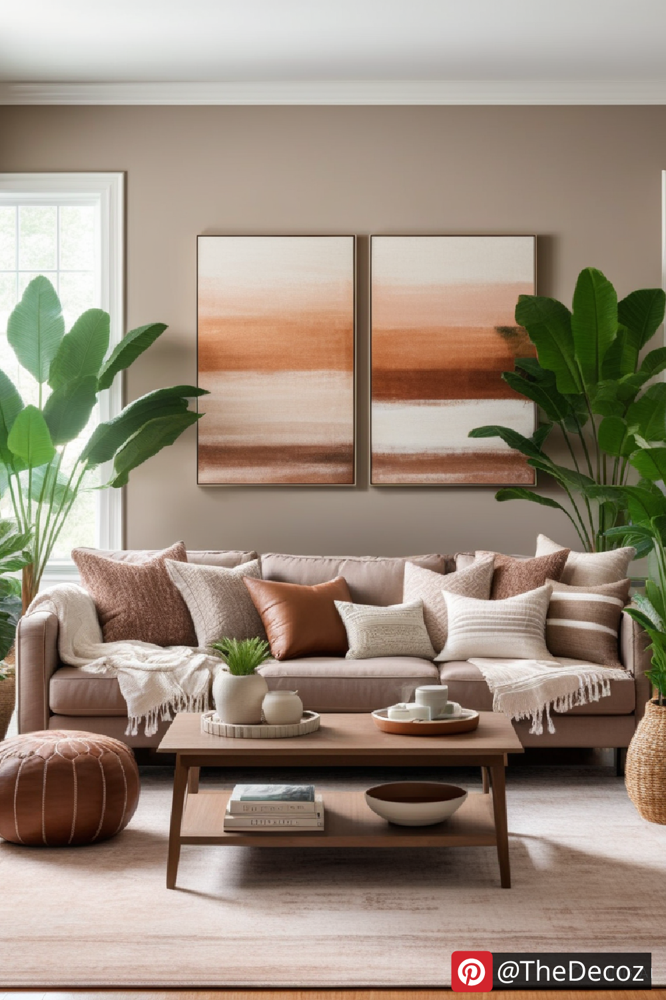
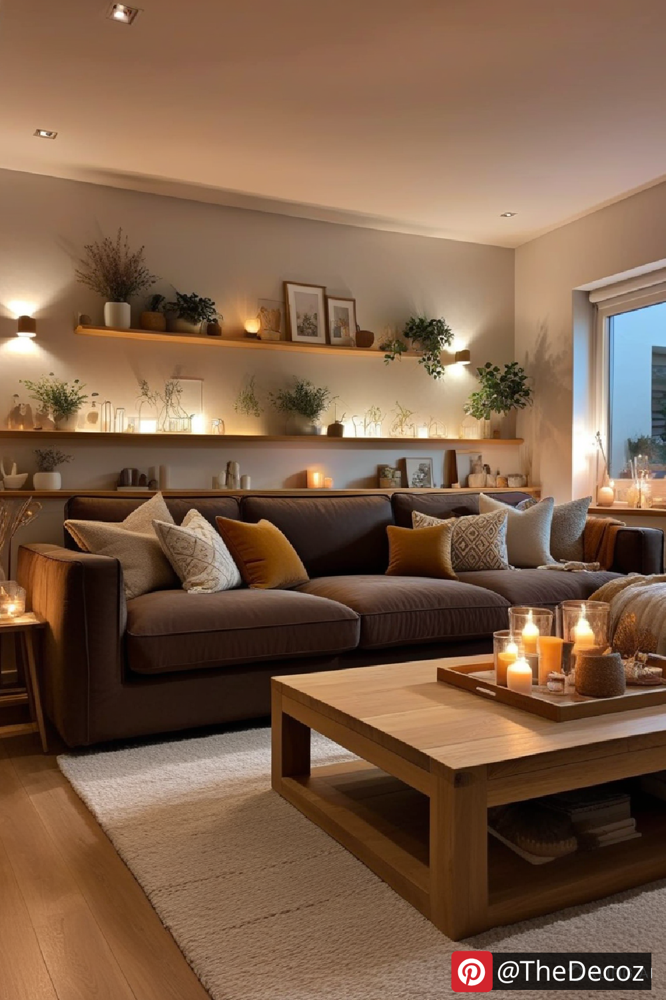
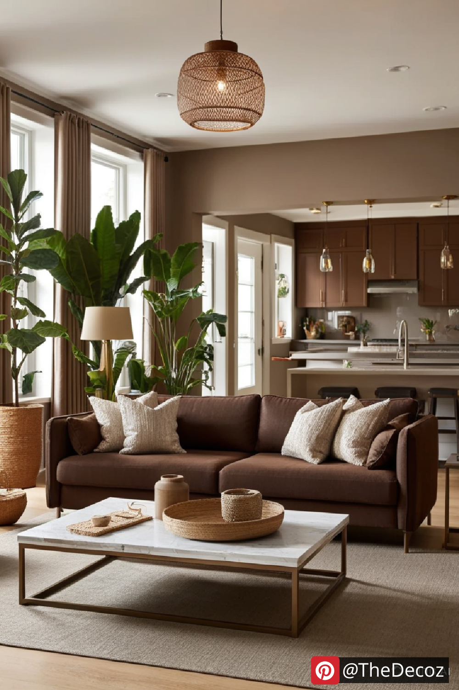
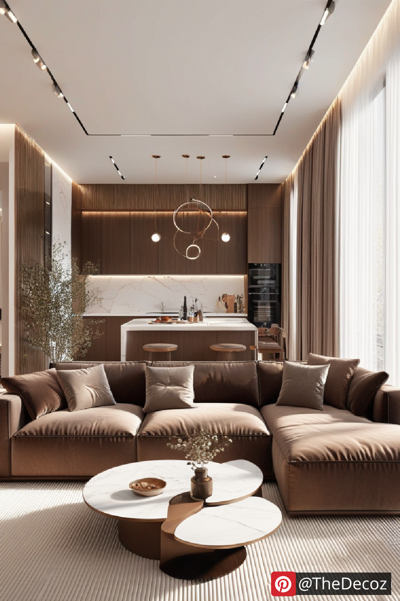
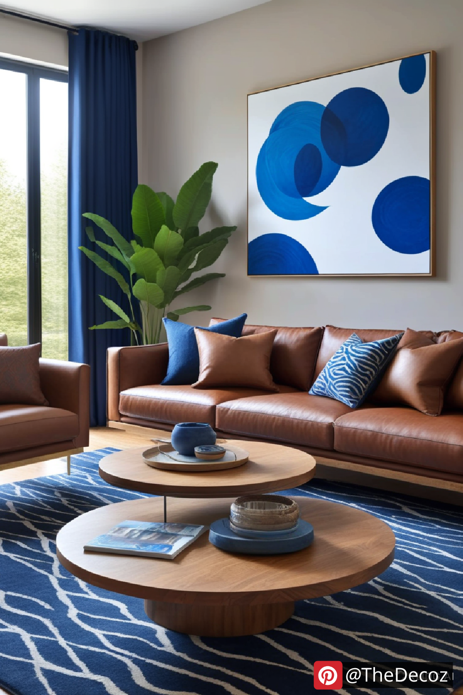

The living room is the heart of any home, and the furniture you choose plays a pivotal role in setting the tone for the entire space. One timeless and versatile piece is the brown couch. Whether you prefer a rich leather sofa or a cozy fabric option, incorporating a brown couch into your living room decor can create a warm, inviting atmosphere. In this article, we’ll explore innovative ways to style your living room decor with a brown couch, making your space both functional and aesthetically pleasing.
Brown couches are a popular choice for several reasons. They offer:
Versatility: Brown is a neutral color that pairs well with various color palettes.
Durability: Leather and fabric brown couches tend to hide stains better than lighter shades.
Timeless Appeal: Brown never goes out of style, making it a smart investment for long-term use.
When decorating around a brown couch, selecting the right color palette is crucial. Consider these combinations:
Earthy Tones: Beige, cream, and olive green create a warm and cozy atmosphere.
Bold Accents: Navy blue, mustard yellow, or burnt orange can add a vibrant touch.
Monochromatic Look: Different shades of brown with hints of white or gray for a sophisticated feel.
Accessories can transform the entire look of your living room. Here’s how to make your brown couch stand out:
Throw Pillows: Mix textures and patterns in complementary colors like beige, green, or rust.
Blankets: A chunky knit throw in a light color will add both comfort and contrast.
Area Rugs: Opt for geometric or Persian-style rugs to anchor the space.
Wall Art: Abstract art or nature-inspired prints in coordinating colors can complete the look.
Lighting can enhance the overall ambiance of your living room. Use a combination of:
Floor Lamps: To brighten corners and add height.
Table Lamps: For softer, more intimate lighting.
Pendant Lights: To create a focal point above coffee tables.
Plants are an excellent addition to any living room decor. Choose low-maintenance plants like snake plants, pothos, or succulents to add a refreshing vibe next to your brown couch.
A brown couch is a versatile centerpiece that can fit seamlessly into various decor styles, from rustic to modern. By choosing the right accessories, color palettes, and lighting, you can elevate your living room decor with a brown couch into a stylish and inviting space. Whether you prefer a minimalist look or a cozy, layered aesthetic, your brown couch can be the star of the show.
Start experimenting with these ideas to bring warmth, comfort, and style to your living room today!
    